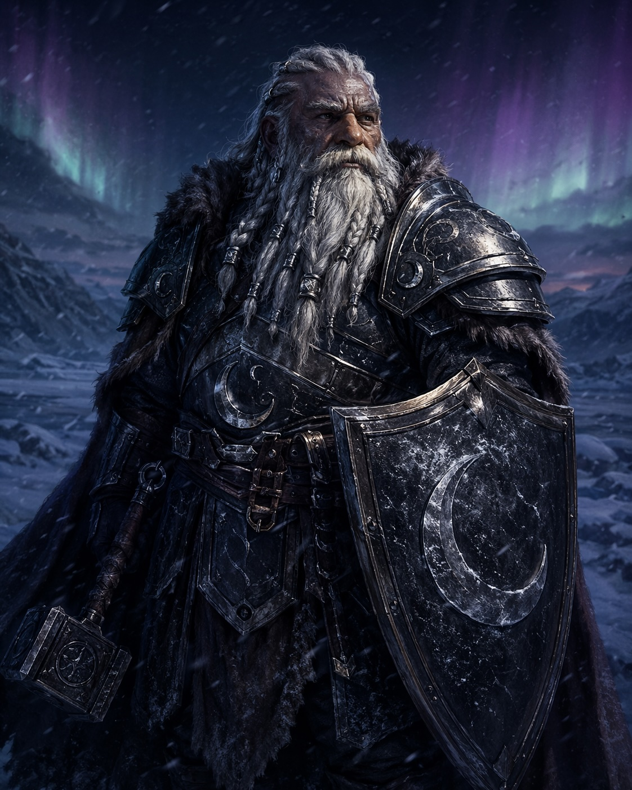
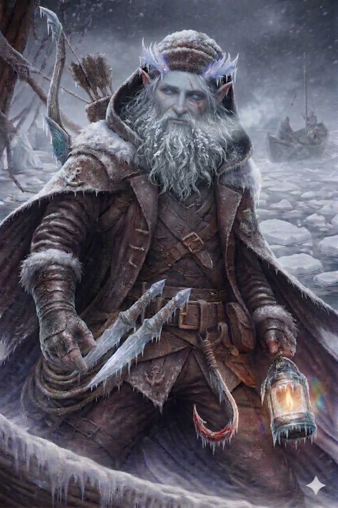
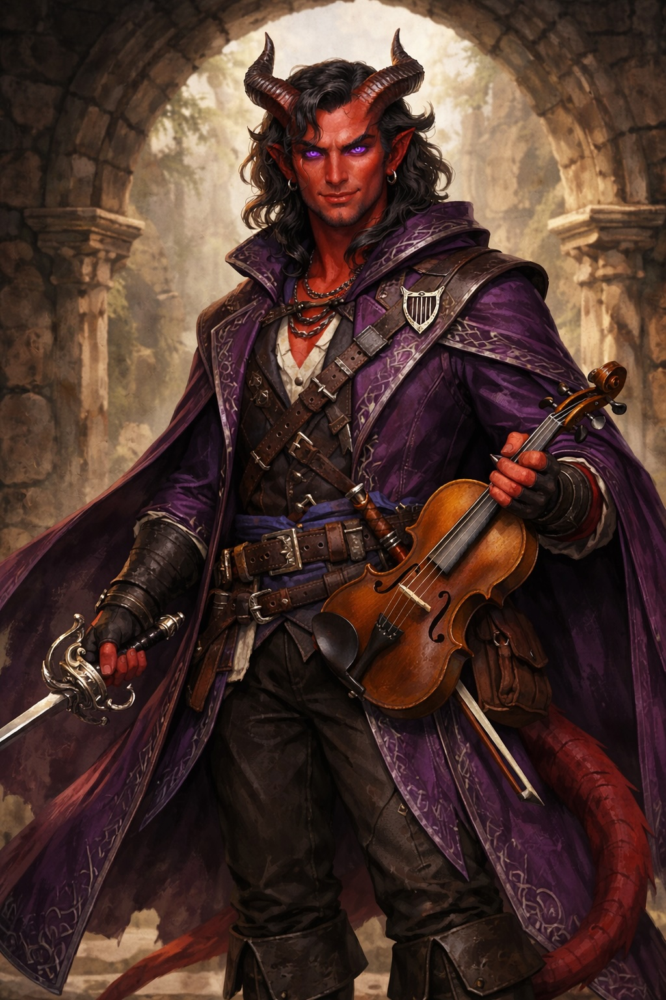
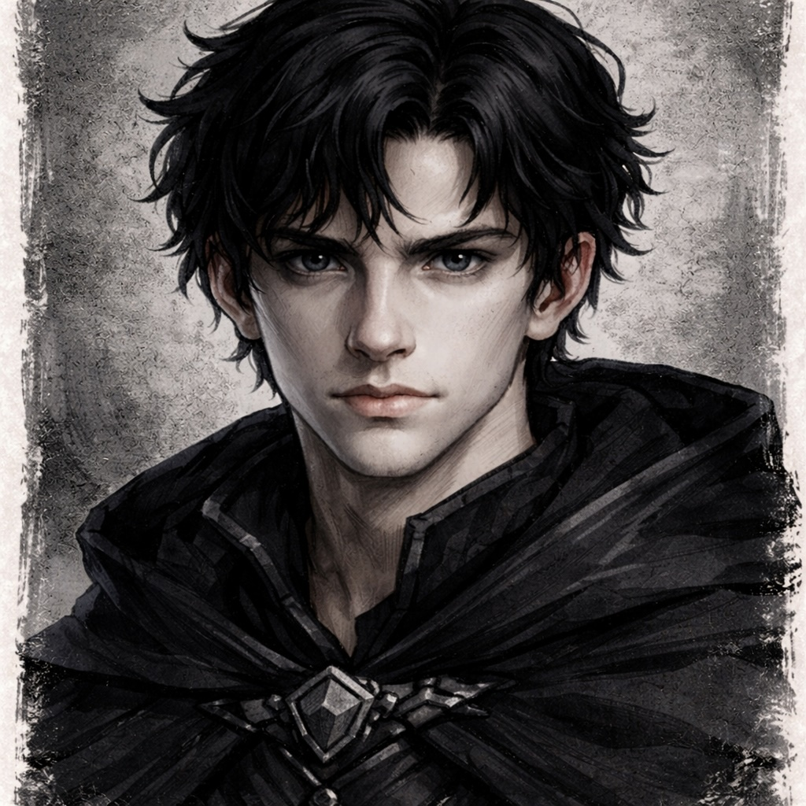
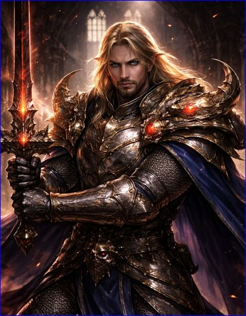
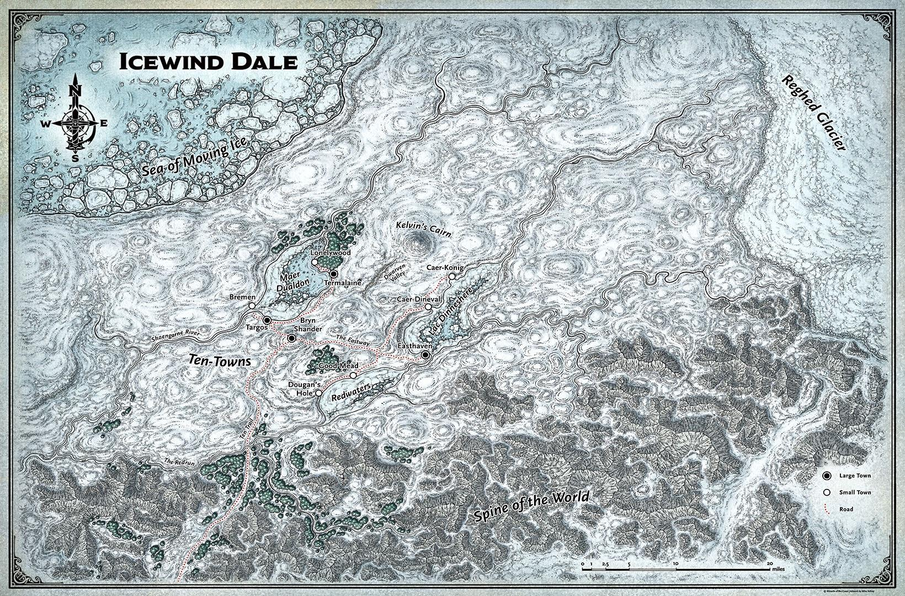

Actor → botón derecho → Export Data
Sube el archivo JSON aquí. Tus datos se guardan en este navegador.
La sesión comenzó exactamente donde la anterior había terminado: en el camino hacia Bremen, con el alcalde Dorbulgruf Shalescar a cuestas y la figura de Aliana disolviéndose en nieve. Lo que quedó en su lugar no era una mujer ni una manifestación inofensiva. Era un llamado. Desde el cielo, como respuesta a la transformación, cuatro entidades de luz fría emergieron de la nieve, una por cada miembro de la party. El DM los nombró Frostwalkers, caminantes de hielo, figuras sin cuerpo sólido que irradiaban un frío antinatural y se movían con propósito directo hacia sus objetivos.
Adrik actuó primero. Sin dudar, lanzó Bless sobre sus tres compañeros más cercanos — "Baraz az amar" — y se reposicionó. El combate fue rápido y eficiente. Sven eliminó al primero con una flecha de booming blade y sneak attack. Elian lanzó Burning Hands en cono, dañando a dos simultáneamente — sus compañeros quedaron fuera del área gracias a la mecánica del hechizo. Teska eliminó otro con su rapier. Adrik intentó el warhammer con un resultado frustrante, pero encontró su momento con Command: miró directamente al caminante que tenía enfrente y le ordenó, en voz firme, "Karak Dum" — huye. La criatura superó el save, y en lugar de obedecer, desenvainó cuatro dagas rústicas y cargó hacia Adrik. Dos de las dagas impactaron antes de que el resto de la party lo rodeara. Un segundo intento con Command más tarde en el combate sí funcionó: el frostwalker salió corriendo hacia la tundra y no volvió. El último fue eliminado por Teska con un corte limpio que partió la figura en dos, dejando caer las ropas vacías al hielo.
Al examinar los restos, Sven tiró Historia con un dieciséis y obtuvo algo perturbador: las vestimentas que quedaban en el suelo eran ropa de invierno del norte. Personas reales. Habitantes de la región convertidos en no-muertos, reanimados por algo o alguien. El group recogió los abrigos — material útil en un lugar donde el frío es arma — y revisó la cabaña donde Aliana fingía estar atrapada. Dentro: raciones para dos días y dos pociones de curación. Las pociones quedaron en manos de Teska y Elian, por ser los que más habían caído en sesiones anteriores. Adrik intentó usar Cure Wounds sobre Dorbulgruf y descubrió en ese momento que no lo tenía preparado. Usó en cambio Healing Word — mínimo, pero suficiente. El alcalde quedó en diez puntos de vida.
Retomaron el camino hacia Bremen.
________________
El siguiente obstáculo no fue un combate sino una decisión. Entre las rocas del camino, la party avistó tres chitines: criaturas humanoides con cuatro brazos cada una, pelaje negro, garras largas y dagas rústicas de hueso, devorando en silencio un cadáver élfico. Adrik tiró Historia con diecisiete y recuperó lo que sabía de ellas: originarias del Underdark, creadas mediante magia aberrante, modificadas por los drow que les agregaron dos brazos adicionales para usarlas como soldados en guerras subterráneas. No pertenecían a la superficie. Que estuvieran aquí, en Icewind Dale, era una señal de que la oscuridad permanente del norte estaba atrayendo criaturas de los planos más profundos.
La decisión fue evitarlas. Teska propuso usar Thaumaturgy para imitar una orden en élfico drow, como si un amo las llamara de vuelta. Elian advirtió que el élfico estándar y el de los drow no son idénticos, pero igual le proporcionó la pronunciación. El resultado fue parcial: dos chitines obedecieron y salieron corriendo, pero la tercera no respondió. Adrik intentó Command sobre la restante — falló el save — y la criatura se giró hacia él con sus cuatro dagas. El combate fue breve: Sven con Booming Blade, Teska con un tajo definitivo en la cabeza. La criatura cayó de cara en la nieve.
Del cadáver élfico que estaba siendo devorado, Elian recuperó un pequeño objeto envuelto en seda, guardado sin abrirlo para inspeccionar más tarde. De la chitine muerta extrajeron tres fragmentos de caparazón endurecido — valor estimado de dos a cinco monedas de oro cada uno — y quince metros de hilo de seda resistente que salía de la parte trasera del cuerpo, suficientemente fuerte para funcionar como cuerda. Adrik se lo quedó.
________________
La marcha de la última hora hacia Bremen fue la más difícil en términos psicológicos. El viento, que había soplado constante durante días, comenzó a cambiar de naturaleza. Primero se detuvo. Luego regresó en pulsos irregulares, como si respirara. Y luego, entre esos pulsos, empezó a susurrar nombres.
Uno por uno.
A Adrik le llegó una voz íntima y perturbadora que habló directamente sobre la tormenta de hace diez años: "Tu padre no vino por edad o por su cuerpo. Prefiere verte fracasar a él antes que fracasar él mismo. Tus compañeros van a morir como murieron tus dos compañeros en aquella tormenta. Tú vas a sobrevivir y ellos no. Solo fue suerte. Y esa suerte está a punto de terminar." Adrik no contestó al viento. En cambio, tomó el emblema de Selûne de su escudo y habló en voz baja, directamente a la diosa: "¿Por qué nunca contestas? ¿Por qué nunca te he sentido? Dame algo." Desde el cielo, sin explicación meteorológica posible, un rayo de luz tenue impactó directamente en el emblema del escudo. Adrik tiró Wisdom con ventaja gracias a ese momento — diecinueve — y los susurros se apagaron. Volvió a respirar.
A Elian le llegó la voz de su abuelo, corrompida y podrida: "El ritual falló. Elegí morir por ti porque verte aprender, crecer, fracasar me dolería demasiado. Eres un inútil. Siempre tienes miedo de todo. Podrías haberlo salvado." Elian, asustado, murmuró "abuelito, perdóname" mientras intentaba racionalizar lo que ocurría. Con una tirada de Inteligencia con ventaja y un veintiuno, logró bloquear los susurros: decidió que esto era obra del mismo ser que mató a su abuelo, y en voz baja prometió, con el bastón clavado en la nieve: "te encontraré, bastardo."
A Sven le llegó la voz más dolorosa. Una voz vieja y falsamente arrepentida lo llamó por su nombre verdadero: Adran. El nombre que no había escuchado en cientos de años. "No maté a tus padres por dinero. Los maté con mis manos, mientras tú escuchabas desde el armario pequeño. ¿Por qué no abriste la puerta? Podrías haberlos salvado." Y luego, las voces de sus padres: "¿Por qué no abriste la puerta?" Sven cayó de rodillas en la nieve, en pánico total. Los demás lo vieron. Lo que lo sacó no fue que alguien le dijera algo — fue un recuerdo: el momento en que su maestro de esgrima, Segismundo Palo Alto, le puso la mano en el hombro en medio de una mansión caótica y le dijo "todo va a estar bien. A partir de ahora serás Sven de Thermaline." Con ese anclaje, Sven tiró Carisma. Doble veinte natural. El master confirmó que nadie había visto ese resultado antes en la campaña. Como consecuencia, Sven obtuvo un bono permanente para el resto de la campaña: una vez puede repetir con ventaja cualquier tirada de Wisdom fallida.
A Teska le llegó una multitud de voces simultáneas: "Los Arpistas no te adoptaron, Teska. Te compraron. Porque los monstruos como tú son útiles. Este mundo te odia por lo que eres. A nadie le importas. Tu misión no es ayudar a Bremen — es asegurarte de que nadie quede con vida." Teska, con su violín en mano y el arco prendido en llamas gracias a un truco de su padre adoptivo, tocó una melodía y superó el save de Carisma.
Dorbulgruf, demasiado agotado para continuar, le pidió a Adrik que lo cargara. Adrik lo hizo sin comentario — "no es la primera vez que cargo enanos" — y la party forzó el paso final hacia Bremen. Teska ganó un nivel de agotamiento durante la marcha, pero una tirada de Constitución dificultad doce salvó al resto. Y luego Adrik sacó otro veinte.
________________
Bremen apareció sin dramatismo. No emergió en el horizonte — simplemente se reveló, como si siempre hubiera estado ahí, oculto entre los pliegues de la nieve. Los aldeanos que estaban afuera los vieron llegar y la noticia se propagó de inmediato: el alcalde estaba vivo. Adrik lo llevaba cargado en la espalda.
La taberna El Alce Gruñón, la misma del primer día, recibió a la party con una multitud de preguntas y un Harlon más cínico que nunca. Ofreció una ronda gratuita — solo para ellos, no para el pueblo entero — y declaró que se la apuntaba a la cuenta de Adrik. Dorbulgruf se acercó al fuego, recuperó algo de fuerza, y antes de retirarse a su casa pronunció un discurso breve y sincero: agradeció a la party, prometió no volver a abandonar a Bremen, anunció que retornaría a las negociaciones con los otros pueblos, y amplió la recompensa original de dos días de cama y comida a una semana completa para todos.
Adrik fue directo a la barra: "cerveza, ¿dónde está la cerveza?"
Teska subió a una mesa y comenzó a relatar la aventura con el entusiasmo de un bardo que finalmente tiene material. Exageró libremente — mencionó cucarachas por miles y criaturas bajo el lago que se devoraban entre sí — y cuando rozó el nombre de Auril, Adrik lo miró desde la barra y le dijo sin levantar la voz: "allá tú, pero hay cosas que no deberíamos divulgar tan abiertamente." Y volvió a su cerveza.
Una granjera de piel oscura se acercó a Teska y contó que semanas atrás había visto a su última vaca elevarse en un rayo de luz y desaparecer. No llegó ningún cargamento de Torga tampoco. Harlon confirmó que hacía un mes no había truchas, y que sin trucha no había proteína suficiente para el pueblo.
Una mujer llamada Iriana, al escuchar que Teska quería enviar una carta al sur, ofreció su última paloma mensajera sin costo, por lo que la party había hecho. También reveló que la compañía Torga — la misma para la que trabaja Sefek Caltro, objetivo activo de la misión de Gillin Trollbane — tiene la capacidad de salir del norte cuando nadie más puede: una barrera de hielo parece impedir que los habitantes abandonen la región, pero Torga se mueve con libertad. Su última ubicación conocida: East Haven, a tres días de viaje de Bremen.
Sven, al retirarse a su habitación, alcanzó a escuchar a un goblin hablar con una mujer en el pasillo: "Ya no están llegando truchas al lago de Bremen, y me temo que ese maldito de Greens tiene algo que ver." Un nombre nuevo. Una pista nueva.
Adrik se despertó temprano, desayunó sopa de agua caliente y cerveza, y convenció a Harlon — con una tirada de Persuasión ajustada — de prestarle el único mapa de la región que existía en la taberna. Lo extendió sobre la mesa y comenzó a hacer una copia a mano, con paciencia de enano, para tener orientación de todos los Diez Pueblos.
El master cerró la sesión con un anuncio: el tutorial había terminado. Con el alcalde de vuelta en Bremen, la campaña entraba en modo sandbox. La próxima sesión comenzaría con la reunión que Dorbulgruf prometió por la mañana, y desde ese punto, las decisiones serían completamente de la party.
La sesión retomó en el interior de la cueva, donde la party continuaba explorando. Adrik investigó el pico de Bremen encontrado la sesión anterior, y el equipo termina descubriendo que había sido usado para picar la pared de piedra. A diferencia del resto de la cueva, esa sección estaba hecha de roca común, no de hielo negro. Alguien también usó su Divine Sense sin encontrar nada, ni no-muertos, ni fiends ni celestiales. Tanto Adrik como Teska encontraron nuevos trozos de tela idénticos a los que habían estado siguiendo, confirmando que el alcalde había estado en ese cuarto. La party decidió explorar el sector más al sur de la cueva, encontrando cajas vacías y señales de que alguien había pasado por ahí, aunque no recientemente. La decisión fue mantenerse juntos y seguir descendiendo.
Fue Draxus quien encontró al alcalde, enterrado bajo un montículo de nieve, con apenas un hilo de vida. Yankavic le aplicó Lay on Hands para estabilizarlo mientras Teska, con una tirada de percepción de diecinueve, notó algo inquietante: bajo el hielo que pisaban había formas moviéndose lentamente, como cuerpos desplazándose bajo la superficie. El hielo comenzó a vibrar. Adrik usó Vigilant Blessing sobre Teska para darle ventaja en iniciativa. Draxus, con un veinte natural en atletismo, desenterró al alcalde por completo. Dorbulgruf Shalescar estaba al borde de la muerte, temblando, los dientes castañeando, pero vivo.
Cuando Adrik intentó acercarse a lo que parecía un altar al fondo del cuarto, el alcalde cobró vida de golpe, lo tomó del peto de la armadura y le dijo sin palabras que no se acercara, antes de caer de nuevo al suelo. La party intentó retirarse, pero una pared de hielo negro surgió bloqueando la salida. Adrik tiró su antorcha al suelo, tomó su hacha con ambas manos y desafió en voz alta a lo que fuera que habitaba ese lugar.
La nieve y el hielo comenzaron a elevarse y tomar forma. Ante ellos apareció Auril, la Doncella del Hielo, una figura pequeña y encorvada, cubierta de plumaje blanco denso, con rasgos de ave, un pico corto y afilado, y ojos amarillos de una consciencia perturbadora. Sobre sus hombros caía un manto azul profundo que parecía absorber la poca luz existente. No reflejaba en el hielo negro, como si no existiera para él.
Auril habló a cada uno de los miembros de la party. A Teska le dijo que habían caminado cuando otros se detuvieron, y que la pregunta no era quién era ella, sino por qué seguían avanzando sin entender nada. Teska respondió que su propósito era salvar a quienes lo necesitaban. Auril asintió levemente. A Yankavic le respondió que las dos cosas no podían hacerse al mismo tiempo, y le advirtió que por su culpa atraería a los no-muertos al norte. A Adrik, al escucharlo mencionar a Selûne, se giró y le dijo directamente: asesino, dejaste morir a los tuyos y lo sabes. Que no se llevarían su reliquia, y que el alcalde estaba destinado a ser su instrumento. A Draxus le dijo que había escuchado y venido, y que eso lo hacía útil.
La situación escaló cuando Yankavic le preguntó su nombre y ella reveló ser Auril. Se irguió a más de dos metros frente a Draxus y le dijo que lo dejaría vivir únicamente a él, para que difundiera su nombre como nueva diosa. Yankavic no retrocedió. Teska le otorgó Heroísmo a Adrik. Dorbulgruf, con el hacha de mano que Adrik le había dado, se lanzó contra Auril y le clavó el filo en la espalda. En lugar de sangre, brotaron hielo y nieve.
El combate fue breve y devastador. Nadie superó la salvación de destreza ante el ataque en área de Auril. Draxus, con resistencia al frío, fue el único que se mantuvo en pie. Intentó arrastrar a Adrik y a Yankavic hacia la salida mientras el alcalde gritaba que él los detendría. Auril alcanzó a Draxus con un toque helado y también lo derribó. Uno a uno, todos cayeron al hielo. Todo se fue a negro, y la party quedó inmóvil, incapaz de hacer algo sobre lo que estaba ocurriendo. No se sabe cuánto tiempo pasó, no se sabe realmente qué pasó.
El grupo despertó en una cabaña, con un punto de vida cada uno, sobre camas de madera. El olor era a tela húmeda y humo. Al abrir la puerta encontraron a Dorbulgruf Shalescar sentado en una mesa, mordisqueando un pan duro, acompañado de una enana de edad avanzada llamada Hlin Trollbane, experimentada aventurera que los había encontrado en la nieve. Según ella, el viento parecía haberlos arrastrado deliberadamente, depositándolos a unos diez metros de donde cayeron. Los montó en su trineo y los llevó a su cabaña. Ofreció té tibio, poco apetecible pero reconfortante, y pan duro como piedra. Les dijo que alguien no los quería muertos todavía.
Hlin les contó que tres de sus amigos habían sido asesinados en menos de un mes. El primero, un halfling trampero en East Haven, encontrado muerto dentro de su cabaña cerrada, sin señales de lucha, con una daga de hielo negro clavada en el pecho. El segundo, un constructor de barcos en Targos, hallado de rodillas frente al lago congelado, misma herida. El tercero, un enano soplador de vidrio en Bryn Shander, mismo método. Y la que más dolía: su propia nieta, encontrada en la habitación contigua con una daga de hielo negro en el pecho, una daga que desapareció aproximadamente una hora después. Las autoridades no hicieron nada. Quería que la party encontrara y diera muerte a Sefek Caltro, guardaespaldas de una compañía mercante llamada Torga. Lo describió como encantador, siempre sonriente, y notablemente anómalo: no usaba abrigo, no temblaba, no exhalaba vapor en el frío extremo. La recompensa ofrecida fue cien monedas de oro por persona más un objeto mágico a elección de cada uno, a cambio de traerle la cabeza del culpable.
Esa noche, todos compartieron el mismo sueño. Vieron los diez pueblos del norte completamente congelados, cada ciudadano incrustado en el hielo, sin vida. Una sombra se acercó a cada uno con un mensaje personalizado. A Adrik le mostró a los suyos, su clan del sur, también congelados, y le preguntó si había venido por deber o porque algo lo esperaba, algo que no era su padre. A Teska le dijo que los Arpistas no lo enviaron para ayudar a Bremen, sino para deshacerse de él porque estorbaba. A Yankavic le advirtió que todo lo que veía sería su culpa, que su juramento se rompería porque no estaba ahí para ayudar sino por sí mismo. A Draxus le recordó a una niña que no se escondió bien y fue masacrada, diciéndole que no intervenir era lo mismo que participar, y que lo mismo le pasaría a los diez pueblos.
Al despertar, la party subió a nivel dos.
En el viaje de regreso a Bremen junto a Dorbulgruf, el grupo encontró una estructura parcialmente enterrada en la nieve. Desde adentro se escuchaba una voz de mujer pidiendo ayuda. Draxus arrancó la puerta de un tirón. Dentro encontraron a una mujer llamada Aliana, con la piel agrietada y los dedos ennegrecidos por necrosis. Dijo que su esposo y su hija habían salido hacia Bremen dos días atrás y que un hombre de piel azul había intentado asesinarla antes de que una ventisca lo ahuyentara. Adrik la curó con Healing Word y notó algo extraño al usar Insight: su voz temblaba al mencionar a su familia. La confrontó directamente, con un tono de intimidación que hizo que sus defensas cedieran, pero ella insistió en no saber nada más.
Fue entonces cuando, al apoyar las manos en la nieve sin guantes, la piel de Aliana se tornó azul. Su cuerpo entero cambió de color y su voz adoptó el mismo tono que Auril en la cueva. Le dijo a la party que no se entrometieran en lo que no les incumbe, y su cuerpo se disolvió en nieve y hielo, desapareciendo completamente.
La sesión cerró en ese punto, con la confrontación pendiente para la siguiente semana.
El grupo llevaba horas en la tundra cuando una figura enana emergió de entre la nieve a sus espaldas. Barba blanca trenzada, armadura oscura, un escudo con luna grabada. Se presentó sin rodeos: Adrik Frostbeard, venido del sur por encargo de su padre. El alcalde desaparecido, Dorbulgruf Shalescar, era sangre lejana del clan. Eso bastó como explicación.
El frío ya cobraba su precio. Draxus y Teska fallaron sus salvaciones de constitución y ganaron un nivel de agotamiento — sus ropas aún húmedas del incidente con el hielo de la sesión anterior. La party encontró un refugio entre árboles para montar campamento. Adrik tomó la primera guardia y dejó una trampa tendida antes de descansar.
La segunda guardia fue de Elian. Treinta minutos adentro, tres siluetas reptilianas emergieron desde el perímetro — trogloditas, hambrientos, atraídos por el olor. Elian los alertó silenciosamente. El combate fue corto pero brutal: Sven eliminó al primero con un virote encendido directamente en la cuenca ocular. Elian cayó a 0 HP con una daga en la espalda. Adrik lanzó Healing Word — "Kharak azamar" — y lo devolvió a la pelea desde el suelo. Draxus decapitó al segundo. El tercero fue desintegrado por tres misiles mágicos de Elian, que le reventaron un pie, una mano y finalmente la cabeza.
Adrik trozó los cadáveres sobre un tronco, recuperó cuatro porciones de carne de troglodita y encontró en uno de ellos un collar rudimentario con un colmillo de criatura desconocida. La trampa, revisada al amanecer, tenía una liebre flaca atrapada — muerte rápida y guardada como ración.
La tercera guardia la hizo Sven. Un zombie emergió de entre los cadáveres cubiertos por la nieve — la sangre del combate anterior había atraído a un muerto viviente. Segundo combate, más breve. La party terminó el descanso largo, Adrik activó Eyes of Night para Elian y Draxus, y retomaron el rastro.
Las huellas seguían hacia el norte hasta un montículo de hielo frágil. Adrik detectó las zonas más débiles y organizó a la party en fila para cruzar de a uno. Teska pisó mal, cayó al agua helada y recibió ocho puntos de daño de frío. Adrik le lanzó una cuerda de cincuenta pies mientras Elian la amarraba con Mano Mágica. Sven ofreció licor de marinero — todos bebieron, con mayor o menor disgusto. La tirada de constitución fue superada por toda la party gracias a eso.
Las huellas viraron al este sobre roca oscura y húmeda, hasta terminar frente a la entrada de una cueva irregular. Dentro: silencio anormal. Las armaduras de Adrik y Draxus sonaban, pero los pasos no. Las paredes estaban cubiertas de hielo negro con una propiedad inquietante: algunos objetos sin vida se reflejaban en él — el violín de Teska, las armaduras — pero nada vivo. Sin embargo, la party no logró determinar con claridad qué objetos sí se reflejaban y cuáles no. La regla exacta del fenómeno quedó sin resolver. Adrik ganó un nivel de agotamiento por una ráfaga de frío que lo golpeó de lleno mientras avanzaban.
Siguiendo un leve olor a sangre hacia el norte, la party encontró un refugio improvisado dentro de la cueva. Dos cuerpos congelados: un humano varón y una elfa. Adrik los examinó — no murieron con dolor, fueron posicionados deliberadamente, congelados mientras aún vivían. La sangre del suelo no pertenecía a ellos. Unas velas se consumieron y se apagaron justo al ser notadas por Elian.
Al fondo, sostenido en una roca, un pico de minero. En su parte metálica, grabado: el símbolo del pueblo de Bremen.
La sesión cerró ahí.
En Icewind Dale, la luz del sol apenas merece ese nombre. Si aparece, lo hace débil, tenue, como si incluso el día hubiera perdido la voluntad de imponerse al invierno. Las noches, en cambio, son largas. Demasiado largas. En medio de este desierto helado sobreviven los Diez Pueblos, conectados por caminos peligrosos y por una necesidad común: resistir un día más. No son como las ciudades de la Costa de la Espada. Aquí no hay grandeza, ni comodidad.Solo refugios. La vida es dura, y por lo que he visto, también es corta.
Comenzamos en Bremen, uno de los pueblos más pequeños y olvidados de la región. Sus casas son bajas, pero resistentes, agrupadas junto a un lago cubierto por una capa de hielo gruesa. Durante generaciones, sus habitantes han vivido de lo que pueden sacar de esas aguas. Pero últimamente incluso eso se ha vuelto incierto. Los pescadores ya no saben si tendrán suerte. Los peces escasean. El hielo cruje con sonidos inquietantes. Algunos aseguran haber visto cosas moviéndose sobre la superficie o debajo de ella. Los rumores han hecho su trabajo: aquí la moral es baja y el miedo alto.
En medio de ese temor, el alcalde de Bremen, Dorbulgruf Shalescar, un enano de edad avanzada, decidió partir hacia la tundra abierta. Según cuentan, estaba convencido de que este invierno no es natural. Habló de buscar respuestas. De hallar una forma de terminar con el frío eterno que azota Icewind Dale. Han pasado semanas desde que se marchó y no ha regresado.
Nos encontrábamos en la taberna El Alce Gruñón. Dentro olía a grasa quemada, alcohol fuerte y ropa húmeda secándose demasiado cerca del fuego. Las mesas estaban llenas de aldeanos de rostro cansado y manos agrietadas. La tensión se sentía en el aire. Harlond, el tabernero, parecía resignado a escuchar una y otra vez la misma conversación. Un enano anciano con capucha de oso, llamado Grins, hablaba también sobre la desaparición del alcalde. Una medio elfa de cabello castaño, Tali, dijo sin rodeos que esta vez no volvería. Otra mujer añadió que el alcalde había hablado de un sueño, algo relacionado con viajar al norte.
La discusión fue subiendo de tono hasta que varios aventureros aceptamos ir en su búsqueda.
Fue allí donde conocí a quienes ahora viajan conmigo.
Sven fue el primero que me llamó la atención. Un elfo de piel azulada, claramente acostumbrado al invierno. Viejo, endurecido, marcado por el frío de una forma que parecía ir más allá de lo natural. El hielo parecía recorrerle el cuerpo, y su barba grisácea y blanca, igual que su cabello, estaba rígida por la escarcha. Tiene el porte de un hombre que ha sobrevivido demasiadas tormentas. Por cómo viste y por cómo huele, diría que fue marinero. Lleva una cicatriz cruzándole uno de los ojos, y su mirada parece perdida, como si una parte de él se hubiera quedado atrás hace mucho tiempo. En la frente sobresalen témpanos que casi parecen cuernos.
Draxxus impone desde el primer momento. Un dragonante plateado enorme, de casi dos metros, con un cuerno roto y varias cicatrices en el rostro. Lleva una cota de malla y un tabardo amarillo y negro con el dibujo de un yunque, todo bastante desgastado. Se ve rudo, y sin embargo trata bien a la gente. Hay algo distante en él, una especie de cansancio o reserva, pero no crueldad. Admito que me sorprendió verlo comer sopa en un tazón diminuto con toda la seriedad del mundo. Resultó una imagen extrañamente humana.
Iankavic parece hecho de acero y convicción. Un semielfo con armadura pesada, muy serio, con el aire de un guerrero consagrado a algo superior. Da la impresión de ser una especie de campeón divino o caballero sagrado. Orgulloso, firme y de pocas palabras. Todavía no sé qué clase de hombre es en realidad, pero no parece alguien que retroceda fácilmente.
Tezca fue el más difícil de situar. Un tiefling bien vestido. Se nota enseguida que no es de aquí, o al menos que no pertenece a Bremen ni a sus gentes. Lleva en el pecho un símbolo de arpa, y eso bastó para dejar claro que viaja con algún propósito. No sé cuál pero de seguro tendrá una historia.
También supimos algo más inquietante sobre el alcalde. Al parecer, no era la primera vez que desaparecía o actuaba de forma extraña. Un aldeano nos contó que los guardias lo habían encontrado una vez a la orilla del río, de rodillas, mirando fijamente el hielo como si hablara con su propio reflejo. Dijeron que balbuceaba. Que no estaba solo, aunque no hubiera nadie visible con él. Hablaba de algo que habitaba bajo el hielo. No exactamente una voz, según él, pero algo que podía entender. Llegó a decir que no era el frío lo que estaba matando el sol… sino algo que lo estaba mirando.
No me gustó escuchar eso.
Taly nos ofreció una poción para cerrar heridas, y de algún modo terminó en mis manos. No sé si fue prudencia ajena o una forma silenciosa de decir que me veía demasiado frágil para este lugar. Tal vez ambas.
Partimos hacia el norte.
El frío fuera del pueblo parecía capaz de congelar la sangre dentro del cuerpo. El río Shaengarne estaba completamente helado. Y a medida que avanzábamos tuve la incómoda certeza de que algo, en algún lugar, nos observaba. No sabría explicar por qué. A veces no hace falta ver algo para sentirlo.
Encontramos trozos de tela manchados de sangre. Más adelante, nos topamos con unas criaturas extrañas. Tras derrotarlas, sus cuerpos dejaron ver escamas negras, sorprendentemente cálidas al tacto. Había algo profundamente incorrecto en eso. Recogimos varios fragmentos; calculamos que, si alguien quisiera comprarlos, apenas valdrían unas pocas monedas de cobre.(x6) También hallamos restos orgánicos en su interior, vísceras que podrían ser comestibles en el sentido más cruel de la palabra, aunque su aspecto era repulsivo. Aun así, terminamos recogiendo algunas(x4). En un lugar como este, uno aprende rápido que el hambre obliga a negociar con el asco.
Seguimos los rastros.
La nieve me habló más de lo que habría querido contarme. Pude distinguir que la persona que pasó por allí —muy probablemente el alcalde— había intentado cubrirse con la propia nieve. En un punto cayó de rodillas. Todas las marcas convergían en un único lugar: directamente sobre el hielo. Como si hubiese intentado alcanzar algo que estaba debajo de la superficie.
Limpié el hielo.
Y entonces lo vi.
Arañazos. Marcas. No superficiales ni accidentales, sino surcos claros, insistentes, como si alguien hubiera intentado abrir el hielo desde un mismo punto. Como si hubiera querido entrar… o sacar algo.
No me gustó en absoluto.
Finalmente derribamos un árbol con la intención de usarlo para quebrar la zona marcada y abrirnos paso.
No sé qué encontraremos debajo.
Pero algo en este lugar se siente mal. No solo peligroso, sino mal, como si la naturaleza misma hubiera sido torcida por algo que no debería estar aquí. Y cada vez entiendo mejor por qué un hombre desesperado podría escuchar cosas bajo el hielo… o creer que algo lo observa desde las profundidades.
- Campaña: Icewind Dale: Rime of the Frostmaiden
- Inicio nivel 1, progresión por milestones hasta nivel 11-12
- Sistema: D&D 5e con compra de puntos (27 puntos)
- Plataforma: Foundry VTT con módulo Actor Studio
- Horario: Viernes semanales, nunca se cancela
### Participantes y Personajes
- Luis (Artángelo): Clérigo enano - Adrik
- Paco: Pícaro elfo lunar, marinero - Sven
- Darik: Fighter humano variante, battle master - Draxus
- Gangsta (Eduardo): Bardo tiefling - Teska
- Sat: Mago humano - Elian
- Lanka (Juan): Paladín semielfo de tormenta
### Reglas de Casa y Mecánicas
- Inspiración acumulativa hasta 15 puntos
- Diferentes efectos según puntos gastados
- Ventaja, retiradas, bonificadores de iniciativa
- Flanqueo activado
- Pociones como acción completa (no bonus)
- Munición y raciones se cuentan
- Descanso largo requiere 1 ración
### Configuración del Mundo
- El sol no ha salido en 2 años
- Solo 2 horas de luz tenue diaria
- Norte aislado de la Costa Espada
- Escasez de comida y suministros
- Ambiente de supervivencia y desgaste constante
### Gancho de Aventura
- Inicio en pueblo de Bremen
- Alcalde desapareció buscando al causante del invierno eterno
- Grupo se forma para rescatar al alcalde
- Campaña sandbox después de misión inicial
### Trasfondos de Personajes
- Adrik: Clérigo de la luna, motivaciones religiosas
- Sven: Pescador de Thermaline, relaciones comerciales con Bremen
- Draxus: Ex-mercenario del “Yunque Rojo”, viene del sur
- Teska: Bardo diplomático
- Elian: Mago estudiante, promesa incumplida al abuelo fallecido
### Normas de Mesa
- Juego cooperativo, no PvP
- Resolución de conflictos por roleplay o dados consensuados
- Sin temas prohibidos para ningún participante
- Personajes neutrales/buenos, no malvados
- Nadie es protagonista individual





Objetivo: Sefek Caltro — guardaespaldas de la compañía Torga
Piel azul, no siente el frío. 3 asesinatos con daga de hielo negro. Instrucciones: traer su cabeza.
Posible conexión con Auril. La mujer Aliana que encontramos era una manifestación.
Misiones Completadas (1)
